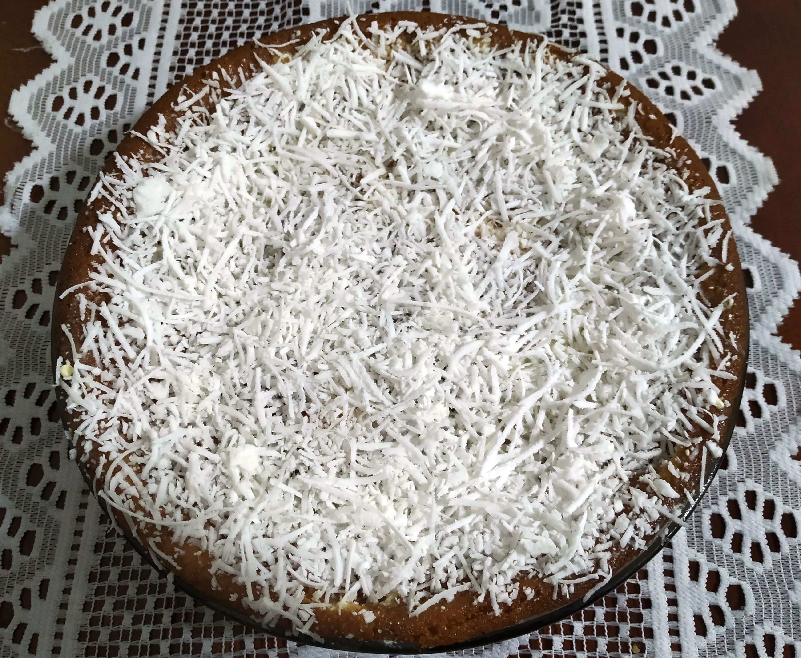

Bolo Prestígio
Ingredientes
- Massa:
- 3 xíc. de farinha de trigo
- 2 ½ xíc. de açúcar
- 1 ½ xíc. de leite
- 100 g de margarina
- 1 xíc. de chocolate em pó
- 4 ovos
- 1 colher de fermento químico
- Recheio:
- 2 xíc. de açúcar
- 1 xíc. de água
- 100 g de coco ralado
- ½ lata de leite condensado
- Cobertura:
- ½ lata de leite condensado
- 125 g de margarina
- 6 colheres de chocolate em pó
Modo de Preparo
Bater as gemas, o açúcar e a margarina, depois alternadamente o chocolate, a farinha, o leite e por último as claras batidas em neve e o fermento. Colocar para assar em forma untada.
Para o recheio fazer uma calda com o açúcar e água e quando ferver, após uns cinco minutos, acrescentar o coco e o leite condensado.
Para a cobertura bater os ingredientes no liquidificador, passar sobre o bolo e manter o bolo na geladeira.
